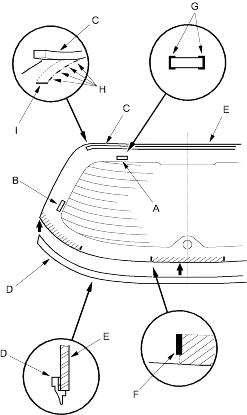

- With a putty knife, scrape the old adhesive smooth to a thickness of about 2 mm (0.08 in.) on the bonding surface around the entire rear window opening flange:
- Do not scrape down to the painted surface of the body; damaged paint will interfere with proper bonding
- Remove the fasteners from the tailgate.
- Clean the tailgate bonding surface with a sponge dampened in alcohol. After cleaning keep oil, grease and water from getting on the surface.
- If the old rear window is to be reinstalled, use a putty knife to scrape off all of the old adhesive, the fasteners and the rubber dams from the rear window. Clean the inside face and the edge of the rear window with alcohol where new adhesive is to be applied. Make sure the bonding surface is kept free of water, oil and grease.
- Glue the upper fasteners (A), side fasteners (B), upper rubber dam (C) and lower rubber dam (D) to the inside face of the rear window (E) as shown. Before installing the lower rubber dam, apply primer (3M M200, or equivalent) to the areas between the alignment marks (F), then glue the rubber dam on:
- Be sure the fasteners and upper rubber dam line up with alignment marks (G, H and I).
- Be sure both ends of the lower rubber dam line up with the edge of the glass.
- Be careful not to touch the rear window where adhesive will be applied.
Hatched area: Apply primer here.
